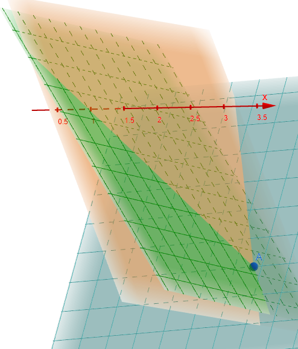
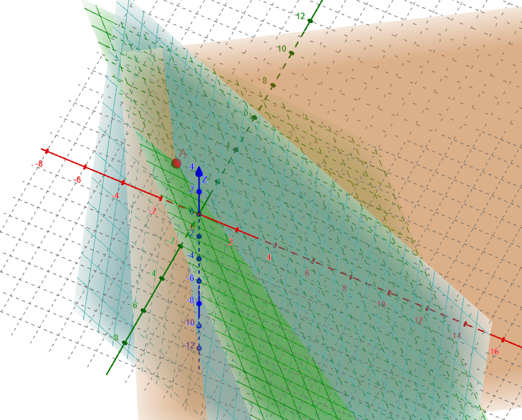
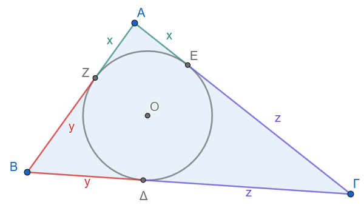
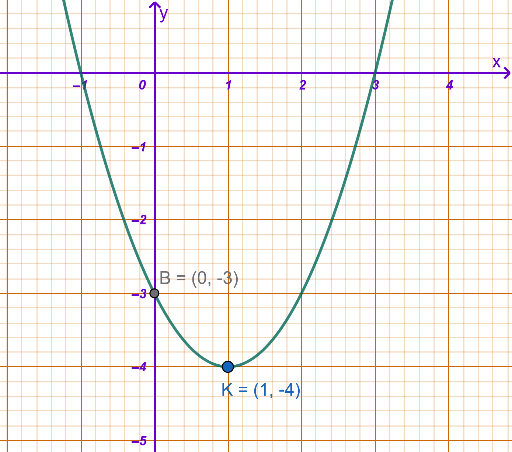
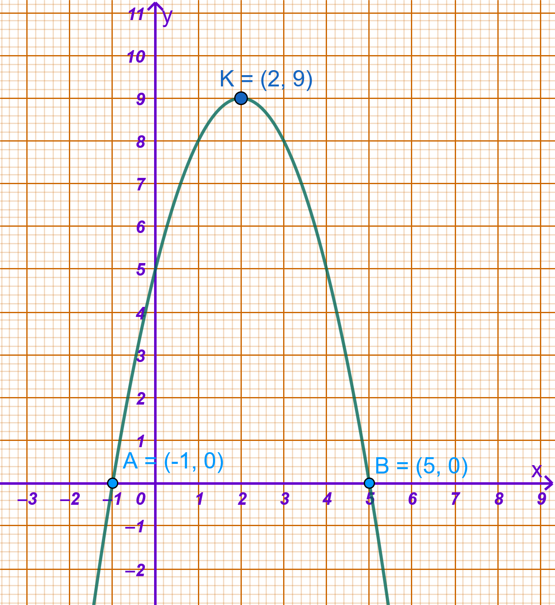
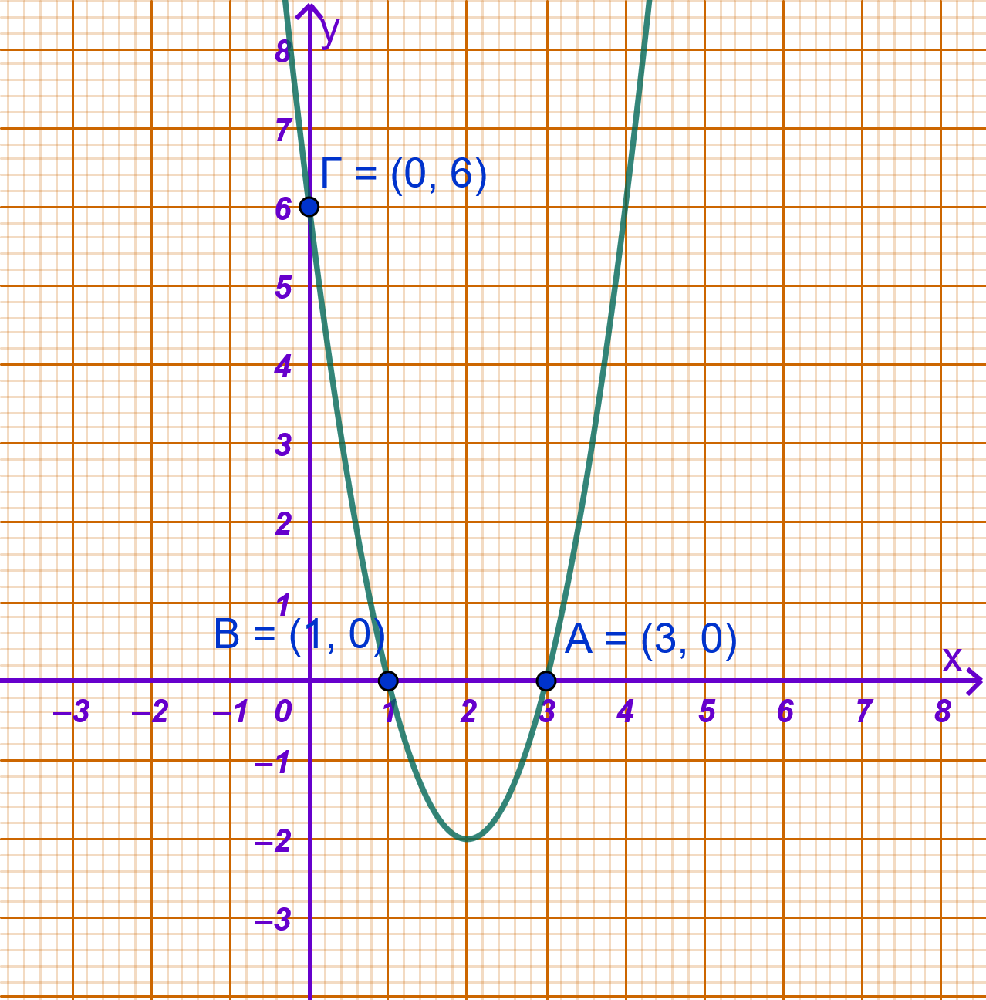

1 Γραμμικά Συστήματα
1.1 Η εξίσωση \(\alpha x + \beta y = \gamma\)
1.1.1 Ορισμοί
Ορισμοί
Κάθε εξίσωση της μορφής \(\alpha x + \beta y = \gamma\), όπου \(\alpha, \beta, \gamma \in \mathbb{R}\) και τουλάχιστον ένας από τους συντελεστές \(\alpha, \beta\) είναι διαφορετικός από το μηδέν (\(\alpha \neq 0\) ή \(\beta \neq 0\)), ονομάζεται γραμμική εξίσωση με δύο αγνώστους \(x\) και \(y\).
Λύση της εξίσωσης ονομάζεται κάθε διατεταγμένο ζεύγος αριθμών \((x_0, y_0)\) που την επαληθεύει, δηλαδή ισχύει \(\alpha x_0 + \beta y_0 = \gamma\).
Γεωμετρική ερμηνεία: Το σύνολο των λύσεων \((x,y)\) της εξίσωσης \(\alpha x + \beta y = \gamma\) παριστάνει γραφικά μία ευθεία γραμμή στο καρτεσιανό επίπεδο.
Από τα σημεία Α και Β μπορείτε να αλλάξετε την θέση της ευθείας ε.
Σε κάθε νέα θέση των σημείων Α και Β διαπιστώστε ότι οι συντεταγμένες τους επαληθεύουν την εξίσωση της ευθείας.
Αλλάξτε την θέση των Α και Β ώστε η ευθεία να είναι παράλληλη με τον άξονα x’x. ποια είναι η εξίσωση της ευθείας σε αυτή την περίπτωση;
Αλλάξτε την θέση των Α και Β ώστε η ευθεία να είναι κάθετη με τον άξονα x’x. ποια είναι η εξίσωση της ευθείας σε αυτή την περίπτωση;
Όταν η ευθεία τέμνει τους άξονες, ελέγξτε τα:
\(x=0 \Rightarrow y= ...... \Rightarrow (x,y)=(...,...)\)
\(y=0 \Rightarrow x= ...... \Rightarrow (x,y)=(...,...)\)
και συγκρίνετε με τα σημεία τομής.
Μπορείτε να κάνετε την διερεύνηση που περιγράφεται στην συνέχεια.
Ανοίξτε το Άλγεβρα και κλίκ στο + για να γράψετε μια εξίσωση σύμφωνα με όσα περιγράφονται παρακάτω (τα x και y πρέπει να είναι στα Λατινικά -Αγγλικά, πατάτε Enter στο τέλος κάθε εξίσωσης)
1.1.2 Διερεύνηση
Η μορφή και η θέση της ευθείας \(\alpha x + \beta y = \gamma\) εξαρτάται από τις τιμές των συντελεστών \(\alpha, \beta\) και του σταθερού όρου \(\gamma\):
Αν \(\beta \neq 0\):
Η εξίσωση επιλύεται ως προς \(y\) και γράφεται στη μορφή: \[y = -\frac{\alpha}{\beta}x + \frac{\gamma}{\beta}\]
Παριστάνει ευθεία με συντελεστή διεύθυνσης \(\lambda = -\dfrac{\alpha}{\beta}\), η οποία τέμνει τον άξονα \(y'y\) στο σημείο \(\left(0, \dfrac{\gamma}{\beta}\right)\).
Ειδικότερα, αν \(\alpha \neq 0\): Η ευθεία είναι πλαγία και τέμνει και τους δύο άξονες.
Ειδικότερα, αν \(\alpha = 0\): Η εξίσωση γίνεται \(y = \dfrac{\gamma}{\beta}\), που παριστάνει ευθεία παράλληλη στον άξονα \(x'x\).
Αν \(\beta = 0\) και \(\alpha \neq 0\):
Η εξίσωση παίρνει τη μορφή \(\alpha x = \gamma \iff x = \dfrac{\gamma}{\alpha}\).
Παριστάνει ευθεία παράλληλη στον άξονα \(y'y\), η οποία τέμνει τον άξονα \(x'x\) στο σημείο \(\left(\dfrac{\gamma}{\alpha}, 0\right)\).
Αν \(\alpha = 0\) και \(\beta = 0\):
Η εξίσωση παίρνει τη μορφή \(0x + 0y = \gamma\).
Αν \(\gamma = 0\): Γράφεται \(0x + 0y = 0\), η οποία επαληθεύεται από κάθε ζεύγος \((x,y) \in \mathbb{R}^2\) (αόριστη).
Αν \(\gamma \neq 0\): Δεν επαληθεύεται από κανένα ζεύγος \((x,y)\) (αδύνατη).
1.1.3 Παραδείγματα
Παράδειγμα 1: Η εξίσωση \(2x + 3y = 6\) γράφεται \(y = -\dfrac{2}{3}x + 2\). Παριστάνει ευθεία με κλίση \(\lambda = -\dfrac{2}{3}\), η οποία τέμνει τον άξονα \(x'x\) στο σημείο \((3,0)\) και τον άξονα \(y'y\) στο σημείο \((0,2)\).
Παράδειγμα 2: Η εξίσωση \(0x + 2y = 4\) γράφεται \(y = 2\). Παριστάνει οριζόντια ευθεία παράλληλη στον άξονα \(x'x\), που διέρχεται από το σημείο \((0,2)\).
1.2 Γραμμικό Σύστημα \(2 \times 2\)
1.2.1 Ορισμοί
Ορισμοί
Γραμμικό σύστημα \(2 \times 2\) ονομάζεται η από κοινού εξέταση δύο γραμμικών εξισώσεων με δύο αγνώστους: \[\begin{cases} \alpha x + \beta y = \gamma \\ \alpha' x + \beta' y = \gamma' \end{cases}\]
Λύση του συστήματος λέγεται κάθε διατεταγμένο ζεύγος αριθμών \((x,y)\) που επαληθεύει ταυτόχρονα και τις δύο εξισώσεις του συστήματος.
Ισοδύναμα συστήματα ονομάζονται τα συστήματα τα οποία έχουν ακριβώς το ίδιο σύνολο λύσεων.
1.2.2 Μέθοδοι Λύσης
- Μέθοδος της αντικατάστασης:
Λύνουμε τη μία από τις δύο εξισώσεις ως προς έναν άγνωστο.
Αντικαθιστούμε την παράσταση αυτή στην άλλη εξίσωση, δημιουργώντας εξίσωση με έναν άγνωστο.
Υπολογίζουμε τον άγνωστο και στη συνέχεια αντικαθιστούμε την τιμή του για να βρούμε τον άλλο.
- Μέθοδος των αντίθετων συντελεστών (ή απαλοιφής):
Πολλαπλασιάζουμε τα μέλη των εξισώσεων με κατάλληλους αριθμούς ώστε οι συντελεστές του ενός αγνώστου να γίνουν αντίθετοι.
Προσθέτουμε κατά μέλη τις εξισώσεις, απαλείφοντας τον έναν άγνωστο.
Επιλύουμε την προκύπτουσα πρωτοβάθμια εξίσωση και αντικαθιστούμε σε μία αρχική.
1.2.3 Αναλυτικά Λυμένο Παράδειγμα και με τις Δύο Μεθόδους
Να λυθεί το σύστημα:
\[\begin{cases} x - 2y = 6 \quad &(1) \\ 3x + 4y = 8 \quad &(2) \end{cases}\]
Α) Με τη Μέθοδο της Αντικατάστασης
Λύνουμε την (1) ως προς \(x\): \(x = 2y + 6\).
Αντικαθιστούμε στην (2): \[3(2y + 6) + 4y = 8 \iff 6y + 18 + 4y = 8 \iff 10y = -10 \iff y = -1\]
Αντικαθιστούμε την τιμή \(y = -1\) στην έκφραση του \(x\): \[x = 2(-1) + 6 = -2 + 6 = 4\]
Άρα η λύση είναι το ζεύγος \((x,y) = (4, -1)\).
Β) Με τη Μέθοδο των Αντίθετων Συντελεστών
Πολλαπλασιάζουμε τα μέλη της (1) επί \(2\), ώστε ο συντελεστής του \(y\) να γίνει \(-4\) (αντίθετος του \(+4\)): \[\begin{cases} 2x - 4y = 12 \\ 3x + 4y = 8 \end{cases}\]
Προσθέτουμε κατά μέλη τις δύο εξισώσεις: \[(2x + 3x) + (-4y + 4y) = 12 + 8 \iff 5x = 20 \iff x = 4\]
Αντικαθιστούμε \(x = 4\) στην (1): \[4 - 2y = 6 \iff -2y = 2 \iff y = -1\]
Άρα η λύση είναι το ζεύγος \((x,y) = (4, -1)\).
Επαλήθευση
Αντικαθιστούμε τις τιμές \(x = 4\) και \(y = -1\) στις αρχικές εξισώσεις:
1η εξίσωση: \(4 - 2(-1) = 4 + 2 = 6\) (Ισχύει).
2η εξίσωση: \(3(4) + 4(-1) = 12 - 4 = 8\) (Ισχύει).
1.3 Γραφική Επίλυση Γραμμικού Συστήματος \(2 \times 2\)
Στη γραφική επίλυση, σχεδιάζουμε στο επίπεδο τις ευθείες \(\epsilon_1: \alpha x + \beta y = \gamma\) και \(\epsilon_2: \alpha' x + \beta' y = \gamma'\). Διακρίνονται τρεις περιπτώσεις:
Διερευνήστε
Διερευνήστε το σύστημα σύμφωνα με τα παρακάτω παραδείγματα.
Αλλάξτε τις τιμές των δρομέων ώστε να σχηματίσετε τα αντίστοιχα συστήματα.
Για ακρίβεια χιλιοστού επιλέξτε κάθε φορά τον δρομέα και Shift+> ή < για να αυξομειώσετε με περισσότερη ακρίβεια.
ή
Μπορείτε να κάνετε την διερεύνηση που περιγράφεται στην συνέχεια.
Ανοίξτε το Άλγεβρα και κλίκ στο + για να γράψετε τις δύο εξισώσεις σύμφωνα με όσα περιγράφονται παρακάτω (τα x και y πρέπει να είναι στα Λατινικά -Αγγλικά, οι εξισώσεις σε διαφορετικές γραμμές ξεχωριστά, πατάτε Enter στο τέλος κάθε εξίσωσης)
1η Περίπτωση: Μοναδική Λύση (Τεμνόμενες Ευθείες)
Οι ευθείες έχουν διαφορετικούς συντελεστές διεύθυνσης (\(\lambda_1 \neq \lambda_2\)) και τέμνονται σε ένα ακριβώς σημείο \(A(x_0, y_0)\), το οποίο αποτελεί τη μοναδική λύση.
Παράδειγμα:
\[\begin{cases} x - y = 1 \iff y = x - 1 \\ x + y = 3 \iff y = -x + 3 \end{cases}\]
Οι συντελεστές διεύθυνσης είναι \(\lambda_1 = 1\) και \(\lambda_2 = -1\). Επειδή \(\lambda_1 \neq \lambda_2\), οι ευθείες τέμνονται στο σημείο \((2,1)\), το οποίο είναι η μοναδική λύση.
2η Περίπτωση: Αδύνατο Σύστημα (Παράλληλες Ευθείες)
Οι ευθείες έχουν τον ίδιο συντελεστή διεύθυνσης (\(\lambda_1 = \lambda_2\)), αλλά διαφορετική τεταγμένη επί την αρχή (\(β \neq β'\)), οπότε είναι παράλληλες και δεν έχουν κανένα κοινό σημείο.
Παράδειγμα:
\[\begin{cases} 2x + 3y = 2 \iff y = -\dfrac{2}{3}x + \dfrac{2}{3} \\ 2x + 3y = -5 \iff y = -\dfrac{2}{3}x - \dfrac{5}{3} \end{cases}\]
Οι ευθείες έχουν \(\lambda_1 = \lambda_2 = -\dfrac{2}{3}\) και \(β \neq β'\). Είναι παράλληλες, άρα το σύστημα είναι αδύνατο.
3η Περίπτωση: Άπειρο Πλήθος Λύσεων / Αόριστο (Συμπίπτουσες Ευθείες)
Οι ευθείες ταυτίζονται πλήρως, έχοντας άπειρα κοινά σημεία.
Παράδειγμα:
\[\begin{cases} 2x + y = 1 \iff y = -2x + 1 \\ 4x + 2y = 2 \iff y = -2x + 1 \end{cases}\]
Οι δύο εξισώσεις εκφράζουν την ίδια ευθεία, συνεπώς το σύστημα έχει άπειρες λύσεις της μορφής \((x, -2x + 1)\) με \(x \in \mathbb{R}\).
1.4 Γενική Μορφή του Συστήματος
Έστω το γραμμικό σύστημα δύο εξισώσεων με δύο αγνώστους \(x\) και \(y\) στη γενική του μορφή: \[\begin{cases} \alpha x + \beta y = \gamma \quad (1) \\ \alpha' x + \beta' y = \gamma' \quad (2) \end{cases}\]
όπου \(\alpha, \beta, \gamma, \alpha', \beta', \gamma' \in \mathbb{R}\).
Αλγεβρική Επίλυση με τους Συντελεστές
Για να επιλύσουμε το σύστημα αλγεβρικά στη γενική του μορφή, εφαρμόζουμε τη μέθοδο των αντίθετων συντελεστών (απαλοιφής):
Απαλοιφή του αγνώστου \(y\):
Πολλαπλασιάζουμε τα μέλη της εξίσωσης (1) επί \(\beta'\) και τα μέλη της εξίσωσης (2) επί \(-\beta\): \[\begin{cases} \alpha \beta' x + \beta \beta' y = \gamma \beta' \\ -\alpha' \beta x - \beta \beta' y = -\gamma' \beta \end{cases}\]
Προσθέτοντας κατά μέλη τις δύο εξισώσεις, εξαλείφεται ο όρος \(y\) και προκύπτει: \[(\alpha \beta' - \alpha' \beta) x = \gamma \beta' - \gamma' \beta \quad (3)\]
Απαλοιφή του αγνώστου \(x\):
Πολλαπλασιάζουμε τα μέλη της εξίσωσης (1) επί \(-\alpha'\) και τα μέλη της εξίσωσης (2) επί \(\alpha\): \[\begin{cases} -\alpha \alpha' x - \alpha' \beta y = -\alpha' \gamma \\ \alpha \alpha' x + \alpha \beta' y = \alpha \gamma' \end{cases}\]
Προσθέτοντας κατά μέλη τις δύο εξισώσεις, εξαλείφεται ο όρος \(x\) και προκύπτει: \[(\alpha \beta' - \alpha' \beta) y = \alpha \gamma' - \alpha' \gamma \quad (4)\]
Πλήρης Διερεύνηση του Συστήματος
Η μορφή και το πλήθος των λύσεων των εξισώσεων (3) και (4) εξαρτώνται άμεσα από την τιμή της παράστασης \((\alpha \beta' - \alpha' \beta)\), που αποτελεί τον συντελεστή του αγνώστου:
1η Περίπτωση: \(\alpha \beta' - \alpha' \beta \neq 0\)
Όταν ο συντελεστής \((\alpha \beta' - \alpha' \beta)\) είναι μη μηδενικός, το σύστημα έχει μοναδική λύση \((x, y)\), η οποία δίνεται από τις σχέσεις:
\[x = \frac{\gamma \beta' - \gamma' \beta}{\alpha \beta' - \alpha' \beta} \quad \text{και} \quad y = \frac{\alpha \gamma' - \alpha' \gamma}{\alpha \beta' - \alpha' \beta}\]
- Γεωμετρική ερμηνεία: Στην περίπτωση που \(\beta \neq 0\) και \(\beta' \neq 0\), η συνθήκη \(\alpha \beta' - \alpha' \beta \neq 0\) γράφεται ισοδύναμα \(-\dfrac{\alpha}{\beta} \neq -\dfrac{\alpha'}{\beta'} \iff \dfrac{\alpha}{\alpha'} \neq \dfrac{\beta}{\beta'}\). Αυτό σημαίνει ότι οι ευθείες που παριστάνουν οι εξισώσεις έχουν διαφορετικούς συντελεστές διεύθυνσης, οπότε τέμνονται σε ένα ακριβώς σημείο.
2η Περίπτωση: \(\alpha \beta' - \alpha' \beta = 0\)
Όταν ο συντελεστής είναι μηδέν, οι εξισώσεις (3) και (4) γίνονται: \[0 \cdot x = \gamma \beta' - \gamma' \beta \quad \text{και} \quad 0 \cdot y = \alpha \gamma' - \alpha' \gamma\]
Διακρίνονται οι ακόλουθες υποπεριπτώσεις:
α) Αν \(\gamma \beta' - \gamma' \beta \neq 0\) ή \(\alpha \gamma' - \alpha' \gamma \neq 0\):
Τουλάχιστον μία από τις εξισώσεις είναι της μορφής \(0 \cdot x = k\) (με \(k \neq 0\)), η οποία δεν επαληθεύεται για καμία τιμή. Συνεπώς, το σύστημα είναι αδύνατο (δεν έχει καμία λύση).
- Γεωμετρική ερμηνεία: Όταν οι συντελεστές είναι μη μηδενικοί, ισχύει \(\dfrac{\alpha}{\alpha'} = \dfrac{\beta}{\beta'} \neq \dfrac{\gamma}{\gamma'}\). Οι δύο ευθείες έχουν τον ίδιο συντελεστή διεύθυνσης αλλά διαφορετικά σταθερά τμήματα, οπότε είναι παράλληλες.
β) Αν \(\gamma \beta' - \gamma' \beta = 0\) και \(\alpha \gamma' - \alpha' \gamma = 0\):
Οι εξισώσεις παίρνουν τη μορφή \(0 \cdot x = 0\) και \(0 \cdot y = 0\). Εφόσον τουλάχιστον ένας από τους συντελεστές των αγνώστων είναι μη μηδενικός, το σύστημα έχει άπειρο πλήθος λύσεων (αόριστο).
- Γεωμετρική ερμηνεία: Όταν οι συντελεστές είναι μη μηδενικοί, ισχύει \(\dfrac{\alpha}{\alpha'} = \dfrac{\beta}{\beta'} = \dfrac{\gamma}{\gamma'}\). Οι εξισώσεις είναι ισοδύναμες και οι αντίστοιχες ευθείες συμπίπτουν.
(Σημείωση: Στην ειδική περίπτωση που όλοι οι συντελεστές των αγνώστων είναι μηδέν)
(\(\alpha = \alpha' = \beta = \beta' = 0\)), αν κάποιος σταθερός όρος είναι μη μηδενικός (\(\gamma \neq 0\) ή \(\gamma' \neq 0\)) το σύστημα είναι αδύνατο, ενώ αν \(\gamma = \gamma' = 0\), το σύστημα επαληθεύεται από κάθε ζεύγος \((x,y) \in \mathbb{R}^2\)).
Αντιστοίχιση με τον Συμβολισμό Οριζουσών
Οι παραπάνω παραστάσεις συνδέονται άμεσα με τις ορίζουσες του συστήματος (Δείτε και παρακάτω):
\(D = \alpha \beta' - \alpha' \beta\) (Ορίζουσα συντελεστών)
\(D_x = \gamma \beta' - \gamma' \beta\) (Ορίζουσα ως προς \(x\))
\(D_y = \alpha \gamma' - \alpha' \gamma\) (Ορίζουσα ως προς \(y\))
Έτσι, η αλγεβρική διερεύνηση συνοψίζεται ως εξής:
Αν \(D \neq 0\): Μοναδική λύση \((x,y) = \left(\dfrac{D_x}{D}, \dfrac{D_y}{D}\right)\).
Αν \(D = 0\) και (\(D_x \neq 0\) ή \(D_y \neq 0\)): Αδύνατο.
Αν \(D = D_x = D_y = 0\): Άπειρες λύσεις (αόριστο).
1.5 Επίλυση Γραμμικού Συστήματος \(2 \times 2\) στη Γενική Μορφή (με Ορίζουσες)
Γενική Μορφή
\[\begin{cases} \alpha x + \beta y = \gamma \\ \alpha' x + \beta' y = \gamma' \end{cases}\]
Ορισμός Οριζουσών
Ορίζουμε τις εξής ορίζουσες:
Ορίζουσα του συστήματος (\(D\)): \[D = \begin{vmatrix} \alpha & \beta \\ \alpha' & \beta' \end{vmatrix} = \alpha \beta' - \alpha' \beta\]
Ορίζουσα ως προς \(x\) (\(D_x\)): \[D_x = \begin{vmatrix} \gamma & \beta \\ \gamma' & \beta' \end{vmatrix} = \gamma \beta' - \gamma' \beta\]
Ορίζουσα ως προς \(y\) (\(D_y\)): \[D_y = \begin{vmatrix} \alpha & \gamma \\ \alpha' & \gamma' \end{vmatrix} = \alpha \gamma' - \alpha' \gamma\]
Σύνοψη Θεωρίας (Κανόνας Cramer)
Αν \(D \neq 0\): Το σύστημα έχει μοναδική λύση τη: \[(x, y) = \left( \frac{D_x}{D}, \frac{D_y}{D} \right)\]
Αν \(D = 0\):
Αν τουλάχιστον μία από τις \(D_x, D_y\) είναι διαφορετική από το μηδέν (\(D_x \neq 0\) ή \(D_y \neq 0\)), το σύστημα είναι αδύνατο.
Αν \(D_x = 0\) και \(D_y = 0\), το σύστημα έχει κατά κανόνα άπειρο πλήθος λύσεων (αόριστο).
(Εξαίρεση: Αν όλοι οι συντελεστές των αγνώστων είναι μηδέν και κάποιος σταθερός όρος όχι, το σύστημα είναι αδύνατο).
1.5.1 Παραδείγματα για Κάθε Περίπτωση με Ορίζουσες
1. Περίπτωση Μοναδικής Λύσης (\(D \neq 0\))
\[\begin{cases} x - 2y = 6 \\ 3x + 4y = 8 \end{cases}\]
Λύση
\(D = \begin{vmatrix} 1 & -2 \\ 3 & 4 \end{vmatrix} = 1 \cdot 4 - 3(-2) = 4 + 6 = 10 \neq 0\)
\(D_x = \begin{vmatrix} 6 & -2 \\ 8 & 4 \end{vmatrix} = 6 \cdot 4 - 8(-2) = 24 + 16 = 40\)
\(D_y = \begin{vmatrix} 1 & 6 \\ 3 & 8 \end{vmatrix} = 1 \cdot 8 - 3 \cdot 6 = 8 - 18 = -10\)
Άρα: \[x = \frac{D_x}{D} = \frac{40}{10} = 4, \quad y = \frac{D_y}{D} = \frac{-10}{10} = -1\] Μοναδική λύση το ζεύγος \((4, -1)\).
2. Περίπτωση Αδύνατου Συστήματος (\(D = 0\) και \(D_x \neq 0\))
\[\begin{cases} 3x + y = 11 \\ 9x + 3y = 6 \end{cases}\]
Λύση
\(D = \begin{vmatrix} 3 & 1 \\ 9 & 3 \end{vmatrix} = 9 - 9 = 0\)
\(D_x = \begin{vmatrix} 11 & 1 \\ 6 & 3 \end{vmatrix} = 33 - 6 = 27 \neq 0\)
Επειδή \(D = 0\) και \(D_x \neq 0\), το σύστημα είναι αδύνατο.
3. Περίπτωση Αόριστου Συστήματος (\(D = D_x = D_y = 0\))
\[\begin{cases} 2x - 3y = 4 \\ 4x - 6y = 8 \end{cases}\]
Λύση
\(D = \begin{vmatrix} 2 & -3 \\ 4 & -6 \end{vmatrix} = -12 - (-12) = 0\)
\(D_x = \begin{vmatrix} 4 & -3 \\ 8 & -6 \end{vmatrix} = -24 - (-24) = 0\)
\(D_y = \begin{vmatrix} 2 & 4 \\ 4 & 8 \end{vmatrix} = 16 - 16 = 0\)
Η πρώτη εξίσωση δίνει \(2x - 3y = 4 \iff y = \dfrac{2x - 4}{3}\). Το σύστημα έχει άπειρες λύσεις της μορφής \(\left(x, \dfrac{2x-4}{3}\right), x \in \mathbb{R}\).
1.6 Παραμετρικό Σύστημα
1.6.1 Ορισμοί
Ορισμοί
Παράμετρος ονομάζεται ένα γράμμα (π.χ. \(\lambda, \mu, \alpha\)) που περιέχεται στους συντελεστές ή τους σταθερούς όρους μίας εξίσωσης ή ενός συστήματος και μπορεί να παίρνει διάφορες πραγματικές τιμές.
Διερεύνηση ονομάζεται η διαδικασία μελέτης του συστήματος για τις διάφορες τιμές της παραμέτρου, ώστε να καθορίσουμε πότε αυτό έχει μοναδική λύση, πότε είναι αδύνατο και πότε έχει άπειρες λύσεις.
1.6.2 Πλήρες Παράδειγμα Διερεύνησης
Εκφώνηση
Να διερευνηθεί το παραμετρικό σύστημα για τις διάφορες τιμές της παραμέτρου \(\lambda \in \mathbb{R}\): \[\begin{cases} \lambda x - y = \lambda - 1 \\ \lambda^2 x - 2y = 2 \end{cases}\]
Βήμα 1: Υπολογισμός των οριζουσών \(D, D_x, D_y\)
\(D = \begin{vmatrix} \lambda & -1 \\ \lambda^2 & -2 \end{vmatrix} = -2\lambda - (-\lambda^2) = \lambda^2 - 2\lambda = \lambda(\lambda - 2)\)
\(D_x = \begin{vmatrix} \lambda - 1 & -1 \\ 2 & -2 \end{vmatrix} = -2(\lambda - 1) - (-2) = -2\lambda + 2 + 2 = -2\lambda + 4 = -2(\lambda - 2)\)
\(D_y = \begin{vmatrix} \lambda & \lambda - 1 \\ \lambda^2 & 2 \end{vmatrix} = 2\lambda - \lambda^2(\lambda - 1) = 2\lambda - \lambda^3 + \lambda^2 = -\lambda(\lambda^2 - \lambda - 2) = -\lambda(\lambda - 2)(\lambda + 1)\)
Βήμα 2: Ρίζες της \(D\)
\[D = 0 \iff \lambda(\lambda - 2) = 0 \iff \lambda = 0 \quad \text{ή} \quad \lambda = 2\]
Βήμα 3: Διάκριση Περιπτώσεων
Περίπτωση Α: \(D \neq 0 \iff \lambda \neq 0\) και \(\lambda \neq 2\)
Το σύστημα έχει μοναδική λύση \((x,y)\): \[x = \frac{D_x}{D} = \frac{-2(\lambda - 2)}{\lambda(\lambda - 2)} = -\frac{2}{\lambda}\] \[y = \frac{D_y}{D} = \frac{-\lambda(\lambda - 2)(\lambda + 1)}{\lambda(\lambda - 2)} = -(\lambda + 1) = -\lambda - 1\]
Άρα \((x,y) = \left(-\dfrac{2}{\lambda}, -\lambda - 1\right)\).
Περίπτωση Β: \(\lambda = 0\)
Τότε \(D = 0\), \(D_x = -2(0 - 2) = 4 \neq 0\) και \(D_y = 0\).
Επειδή \(D = 0\) και \(D_x \neq 0\), το σύστημα είναι αδύνατο.
(Επαλήθευση: Για \(\lambda = 0\) οι εξισώσεις γίνονται \(-y = -1 \iff y = 1\) και \(-2y = 2 \iff y = -1\), που είναι άτοπο).
Περίπτωση Γ: \(\lambda = 2\)
Τότε \(D = 0\), \(D_x = 0\) και \(D_y = 0\).
Το σύστημα γράφεται: \[\begin{cases} 2x - y = 1 \\ 4x - 2y = 2 \end{cases} \iff 2x - y = 1 \iff y = 2x - 1\]
Άρα για \(\lambda = 2\) το σύστημα έχει άπειρο πλήθος λύσεων της μορφής \((x, 2x - 1)\) με \(x \in \mathbb{R}\).
1.7 Γραμμικό Σύστημα \(3 \times 3\)
1.7.1 Ορισμοί & Μεθοδολογία
Ορισμοί και Μέθοδος επίλυσης
Γραμμικό σύστημα \(3 \times 3\) ονομάζεται το σύστημα τριών γραμμικών εξισώσεων με τρεις αγνώστους \(x, y, z\): \[\begin{cases} \alpha_1 x + \beta_1 y + \gamma_1 z = \delta_1 \quad &(1) \\ \alpha_2 x + \beta_2 y + \gamma_2 z = \delta_2 \quad &(2) \\ \alpha_3 x + \beta_3 y + \gamma_3 z = \delta_3 \quad &(3) \end{cases}\]
Λύση του συστήματος είναι κάθε διατεταγμένη τριάδα αριθμών \((x, y, z)\) που επαληθεύει και τις τρεις εξισώσεις.
Μέθοδος Επίλυσης (Αναγωγή σε \(2 \times 2\)):
Επιλέγουμε μία εξίσωση και τη λύνουμε ως προς έναν άγνωστο (π.χ. ως προς \(z\)).
Αντικαθιστούμε την έκφραση αυτή στις άλλες δύο εξισώσεις.
Προκύπτει ένα γραμμικό σύστημα \(2 \times 2\) με αγνώστους \(x\) και \(y\).
Επιλύουμε το σύστημα \(2 \times 2\) και στη συνέχεια υπολογίζουμε την τιμή του \(z\).
Όπως και στα συστήματα \(2 \times 2\), ένα σύστημα \(3 \times 3\) είτε έχει μοναδική λύση, είτε είναι αδύνατο, είτε έχει άπειρο πλήθος λύσεων.
1.7.2 Αναλυτικό Παράδειγμα Επίλυσης & Επαλήθευση
Να λυθεί το σύστημα:
\[\begin{cases} 2x - y + z = 3 \quad &(1) \\ x + 2y - z = 8 \quad &(2) \\ 3x - y + 2z = 4 \quad &(3) \end{cases}\]
Λύση
Λύνουμε την (1) ως προς \(z\): \[z = 3 - 2x + y \quad (4)\]
Αντικαθιστούμε το \(z\) στις εξισώσεις (2) και (3):
Στη (2): \[x + 2y - (3 - 2x + y) = 8 \iff x + 2y - 3 + 2x - y = 8 \iff 3x + y = 11 \quad (5)\]
Στη (3): \[3x - y + 2(3 - 2x + y) = 4 \iff 3x - y + 6 - 4x + 2y = 4 \iff -x + y = -2 \quad (6)\]
Επιλύουμε το σύστημα \(2 \times 2\) των (5) και (6): \[\begin{cases} 3x + y = 11 \\ -x + y = -2 \end{cases}\]
Αφαιρούμε κατά μέλη: \[(3x - (-x)) + (y - y) = 11 - (-2) \iff 4x = 13 \implies x = \frac{13}{4}\]
Αντικαθιστούμε το \(x\) στην \(-x+y=-2 \iff -\dfrac{13}{4}+y=-2 \iff y=\dfrac{13}{4}-2=\dfrac{5}{4}\)
Αντικαθιστούμε στην (4) τα \(x\) και \(y\) για να βρούμε το \(z\)
\(z=3-2x+4 =3-2\cdot\dfrac{13}{4}+\dfrac{5}{4}=\dfrac{12-26+5}{4}=-\dfrac{9}{4}\)

Το σημείο \(Α\left(\dfrac{13}{4}, \dfrac{5}{4}, -\dfrac{9}{4}\right)\) είναι η λύση η οποία φαίνεται στο σχήμα από το κοινό σημείο τομής των τριών επιπέδων
Να λυθεί το σύστημα:
\[\begin{cases} 2x - 3y + z = -10 \quad &(1) \\ 3x + 8y - z = 9 \quad &(2) \\ x + y + z = 0 \quad &(3) \end{cases}\]
Λύση
Βήμα 1: Πρόσθεση των εξισώσεων \((1)\) και \((2)\)
Προσθέτουμε κατά μέλη τις εξισώσεις \((1)\) και \((2)\) για να απαλείψουμε το \(z\):
\[ (2x - 3y + z) + (3x + 8y - z) = -10 + 9 \]
\[ 5x + 5y = -1 \]
Διαιρούμε και τα δύο μέλη με το \(5\):
\[ x + y = -\frac{1}{5} \quad (4) \]
Βήμα 2: Εύρεση του \(z\)
Από την εξίσωση \((3)\) έχουμε:
\[ (x + y) + z = 0 \]
Αντικαθιστούμε το \(x + y = -\frac{1}{5}\) από το Βήμα 1:
\[ -\frac{1}{5} + z = 0 \implies z = \frac{1}{5} \]
Βήμα 3: Εύρεση του \(y\)
Από τη σχέση \((4)\) εκφράζουμε το \(x\) ως:
\[ x = -\frac{1}{5} - y \]
Αντικαθιστούμε το \(x = -\frac{1}{5} - y\) και το \(z = \frac{1}{5}\) στην εξίσωση \((1)\):
\[ 2\left(-\frac{1}{5} - y\right) - 3y + \frac{1}{5} = -10 \]
\[ -\frac{2}{5} - 2y - 3y + \frac{1}{5} = -10 \]
\[ -5y - \frac{1}{5} = -10 \]
\[ -5y = -10 + \frac{1}{5} \]
\[ -5y = -\frac{49}{5} \]
\[ y = \frac{49}{25} \]
Βήμα 4: Εύρεση του \(x\)
Αντικαθιστούμε την τιμή του \(y\) για να βρούμε το \(x\):
\[ x = -\frac{1}{5} - \frac{49}{25} \]
\[ x = -\frac{5}{25} - \frac{49}{25} \]
\[ x = -\frac{54}{25} \]
Τελική Λύση
Η μοναδική λύση του συστήματος είναι:

\[ (x, y, z) = \left(-\frac{54}{25}, \frac{49}{25}, \frac{1}{5}\right) \]
Όπως φαίνεται και στο σχήμα σαν τομή των τριών επιπέδων.
1.8 Ασκήσεις και Προβλήματα Εμπέδωσης
Θέμα 1: Η εξίσωση \(\alpha x + \beta y = \gamma\)
Να βρεθούν τα σημεία τομής της ευθείας \(3x - 4y = 12\) με τους άξονες \(x'x\) και \(y'y\) και να σχεδιαστεί η γραφική της παράσταση.
Να προσδιοριστεί ο πραγματικός αριθμός \(\alpha\) ώστε η ευθεία \((\alpha - 2)x + 3y = 6\) να είναι παράλληλη στον άξονα \(x'x\).
Θέμα 2: Αλγεβρική Επίλυση \(2 \times 2\)
Να λυθεί με τη μέθοδο της αντικατάστασης το σύστημα \[\begin{cases} 2x + y = 7 \\ 5x - 3y = 1 \end{cases}\] και να γίνει επαλήθευση των τιμών.
Να λυθεί με τη μέθοδο των αντίθετων συντελεστών το σύστημα \[\begin{cases} 3x + 4y = 18 \\ 5x - 2y = 4 \end{cases}\].
Να λυθεί το σύστημα: \[\begin{cases} \dfrac{x+1}{3} - \dfrac{y-2}{2} = 1 \\ 2(x - 1) + 3(y + 1) = 13 \end{cases}\].
Να λυθεί το σύστημα που ανάγεται σε γραμμικό: \[\begin{cases} 3x + 2y = 7 \\ x - 4y = -7 \end{cases}\].
Θέμα 3: Γραφική Επίλυση \(2 \times 2\)
Να επιλυθεί γραφικά το σύστημα \[\begin{cases} x + y = 5 \\ 2x - y = 1 \end{cases}\] και να επιβεβαιωθεί αλγεβρικά η μοναδική λύση.
Να αιτιολογηθεί γραφικά γιατί το σύστημα \[\begin{cases} 2x - y = 3 \\ 4x - 2y = 1 \end{cases}\] είναι αδύνατο.
Να δειχθεί γραφικά ότι το σύστημα \[\begin{cases} x - 3y = 2 \\ 3x - 9y = 6 \end{cases}\] έχει άπειρο πλήθος λύσεων.
Θέμα 4: Επίλυση \(2 \times 2\) με Ορίζουσες (Cramer)
Να υπολογιστούν οι ορίζουσες \(D, D_x, D_y\) και να λυθεί το σύστημα \[\begin{cases} 4x - 3y = 11 \\ 3x + 5y = 2 \end{cases}\].
Χρησιμοποιώντας ορίζουσες, να εξεταστεί αν το σύστημα \[\begin{cases} 2x - 6y = 5 \\ -x + 3y = 2 \end{cases}\] έχει λύση.
Να λυθεί με ορίζουσες το σύστημα \[\begin{cases} 5x - 2y = 10 \\ 10x - 4y = 20 \end{cases}\].
Θέμα 5: Παραμετρικά Συστήματα \(2 \times 2\)
Να γίνει πλήρης διερεύνηση για τις τιμές του \(\lambda \in \mathbb{R}\) του συστήματος: \[\begin{cases} \lambda x + y = 2 \\ x + \lambda y = \lambda + 1 \end{cases}\].
Να διερευνηθεί το παραμετρικό σύστημα: \[\begin{cases} (\lambda - 2)x + 3y = 6 \\ 2x + (\lambda + 3)y = 4 \end{cases}\].
Να βρεθεί η τιμή της παραμέτρου \(\mu \in \mathbb{R}\) ώστε το σύστημα \[\begin{cases} \mu x + 4y = 8 \\ 4x + \mu y = 8 \end{cases}\] να έχει άπειρες λύσεις.
Θέμα 6: Γραμμικά Συστήματα \(3 \times 3\)
Να λυθεί και να επαληθευτεί το σύστημα \(3 \times 3\): \[\begin{cases} x + y + z = 6 \\ 2x - y + z = 3 \\ 3x + 2y - z = 4 \end{cases}\].
Να επιλυθεί το σύστημα: \[\begin{cases} 2x + y - z = 5 \\ x - 2y + 2z = -2 \\ 3x + 3y + z = 13 \end{cases}\].
Να λυθεί το σύστημα: \[\begin{cases} x + y = 7 \\ y + z = 9 \\ z + x = 8 \end{cases}\].
Θέματα Εφαρμογής & Προβλήματα
- Πρόβλημα Αγοράς: Ένας μαθητής αγόρασε συνολικά 12 τετράδια και στυλό, πληρώνοντας συνολικά 18€. Αν κάθε τετράδιο κοστίζει 2€ και κάθε στυλό 1€, να βρεθεί πόσα τετράδια και πόσα στυλό αγόρασε.
- Πρόβλημα Ηλικιών:
Ο πατέρας είναι σήμερα κατά 28 χρόνια μεγαλύτερος από τον γιο του. Πριν από 4 χρόνια, η ηλικία του πατέρα ήταν πενταπλάσια από την ηλικία του γιου του. Να βρεθούν οι σημερινές τους ηλικίες.
Λύση:
Ορισμός Μεταβλητών
Έστω:
- \(x\): η σημερινή ηλικία του πατέρα
- \(y\): η σημερινή ηλικία του γιου
Διατύπωση Εξισώσεων
Σήμερα, ο πατέρας είναι κατά \(28\) χρόνια μεγαλύτερος από τον γιο του: \[x = y + 28 \quad (1)\]
Πριν από 4 χρόνια:
- Η ηλικία του πατέρα ήταν: \(x - 4\)
- Η ηλικία του γιου ήταν: \(y - 4\)
Η ηλικία του πατέρα ήταν πενταπλάσια από την ηλικία του γιου: \[x - 4 = 5(y - 4) \quad (2)\]
Επίλυση του Συστήματος
Αντικαθιστούμε την εξίσωση \((1)\) στην εξίσωση \((2)\):
\[(y + 28) - 4 = 5(y - 4)\]
\[y + 24 = 5y - 20\]
Χωρίζουμε γνωστούς από αγνώστους:
\[24 + 20 = 5y - y\]
\[44 = 4y\]
\[y = \frac{44}{4}\]
\[y = 11\]
Τώρα βρίσκουμε την ηλικία του πατέρα αντικαθιστώντας το \(y = 11\) στην εξίσωση \((1)\):
\[x = 11 + 28\]
\[x = 39\]
Τελική Απάντηση
- Η σημερινή ηλικία του πατέρα είναι \(39\) ετών.
- Η σημερινή ηλικία του γιου είναι \(11\) ετών.
- Πρόβλημα Αναμείξεων (Διαλύματα / Περιεκτικότητα %)
Εκφώνηση:
Ένας χημικός θέλει να παρασκευάσει \(100 \text{ L}\) διαλύματος αλκοόλης με περιεκτικότητα \(40\%\). Στη διάθεσή του έχει δύο διαλύματα: το πρώτο έχει περιεκτικότητα \(25\%\) σε αλκοόλη και το δεύτερο \(50\%\). Πόσα λίτρα από κάθε διάλυμα πρέπει να αναμίξει;
Λύση:
Έστω \(x\) τα λίτρα του διαλύματος \(25\%\) και \(y\) τα λίτρα του διαλύματος \(50\%\).
Συνολικός όγκος διαλύματος: \[x + y = 100 \quad (1)\]
Ποσότητα καθαρής αλκοόλης: Το τελικό διάλυμα περιέχει \(40\% \cdot 100 = 40 \text{ L}\) καθαρής αλκοόλης. Άρα: \[0{,}25x + 0{,}50y = 40 \iff 25x + 50y = 4000 \iff x + 2y = 160 \quad (2)\]
Αφαιρούμε την (1) από την (2): \[(x + 2y) - (x + y) = 160 - 100 \implies y = 60 \text{ L}\]
Αντικαθιστούμε \(y = 60\) στην (1): \[x + 60 = 100 \implies x = 40 \text{ L}\]
Απάντηση: Χρειάζονται \(40 \text{ L}\) από το διάλυμα \(25\%\) και \(60 \text{ L}\) από το διάλυμα \(50\%\).
- Πρόβλημα Κίνησης & Ταχύτητας (Ρεύμα Ποταμού)
Εκφώνηση:
Ένα πλοιάριο διανύει απόσταση \(48 \text{ km}\) κινούμενο αντίθετα με το ρεύμα ενός ποταμού σε \(4\) ώρες. Το ίδιο πλοιάριο διανύει την ίδια απόσταση κινούμενο με τη φορά του ρεύματος σε \(2\) ώρες. Να βρεθεί η ταχύτητα του πλοιαρίου σε στάσιμα ύδατα και η ταχύτητα του ρεύματος του ποταμού.
Λύση:
Έστω \(v_π\) η ταχύτητα του πλοιαρίου σε στάσιμα ύδατα (\(\text{km/h}\)) και \(v_ρ\) η ταχύτητα του ρεύματος (\(\text{km/h}\)).
Κίνηση αντίθετα στο ρεύμα (συνολική ταχύτητα \(v_π - v_ρ\)): \[s = (v_π - v_ρ) \cdot t_1 \implies 48 = (v_π - v_ρ) \cdot 4 \implies v_π - v_ρ = 12 \quad (1)\]
Κίνηση με το ρεύμα (συνολική ταχύτητα \(v_π + v_ρ\)): \[s = (v_π + v_ρ) \cdot t_2 \implies 48 = (v_π + v_ρ) \cdot 2 \implies v_π + v_ρ = 24 \quad (2)\]
Προσθέτουμε κατά μέλη τις (1) και (2): \[2v_π = 36 \implies v_π = 18 \text{ km/h}\]
Αφαιρούμε την (1) από την (2): \[2v_ρ = 12 \implies v_ρ = 6 \text{ km/h}\]
Απάντηση: Η ταχύτητα του πλοιαρίου σε στάσιμα ύδατα είναι \(18 \text{ km/h}\) και η ταχύτητα του ρεύματος είναι \(6 \text{ km/h}\).
- Πρόβλημα Γεωμετρίας & Μεταβολής Εμβαδού
Εκφώνηση:
Αν το μήκος ενός ορθογωνίου αυξηθεί κατά \(3 \text{ m}\) και το πλάτος ελαττωθεί κατά \(2 \text{ m}\), το εμβαδόν του ελαττώνεται κατά \(18 \text{ m}^2\). Αν το μήκος ελαττωθεί κατά \(2 \text{ m}\) και το πλάτος αυξηθεί κατά \(3 \text{ m}\), το εμβαδόν αυξάνεται κατά \(17 \text{ m}^2\). Να βρεθούν οι αρχικές διαστάσεις του ορθογωνίου.
Λύση:
Έστω \(x\) το αρχικό μήκος και \(y\) το αρχικό πλάτος (\(x, y > 0\)). Το αρχικό εμβαδόν είναι \(E = x \cdot y\).
1η συνθήκη: \[(x + 3)(y - 2) = xy - 18 \iff xy - 2x + 3y - 6 = xy - 18 \iff 2x - 3y = 12 \quad (1)\]
2η συνθήκη: \[(x - 2)(y + 3) = xy + 17 \iff xy + 3x - 2y - 6 = xy + 17 \iff 3x - 2y = 23 \quad (2)\]
Πολλαπλασιάζουμε την (1) επί \(2\) και την (2) επί \(-3\): \[\begin{cases} 4x - 6y = 24 \\ -9x + 6y = -69 \end{cases}\]
Προσθέτουμε κατά μέλη: \[-5x = -45 \implies x = 9 \text{ m}\]
Αντικαθιστούμε \(x = 9\) στην (1): \[2(9) - 3y = 12 \implies 18 - 3y = 12 \implies 3y = 6 \implies y = 2 \text{ m}\]
Απάντηση: Το αρχικό μήκος είναι \(9 \text{ m}\) και το αρχικό πλάτος \(2 \text{ m}\).
- Πρόβλημα Ψηφίων Αριθμού
Εκφώνηση:
Ένας διψήφιος θετικός ακέραιος αριθμός είναι ίσος με το τετραπλάσιο του αθροίσματος των ψηφίων του. Αν αντιστρέψουμε τη σειρά των ψηφίων του, ο νέος αριθμός που προκύπτει είναι κατά \(27\) μεγαλύτερος από τον αρχικό. Να βρεθεί ο αρχικός αριθμός.
Λύση:
Έστω \(x\) το ψηφίο των δεκάδων και \(y\) το ψηφίο των μονάδων (\(x, y \in \{1, 2, \dots, 9\}\)). Ο αριθμός εκφράζεται ως \(10x + y\).
1η συνθήκη: \[10x + y = 4(x + y) \iff 10x + y = 4x + 4y \iff 6x - 3y = 0 \iff 2x - y = 0 \quad (1)\]
2η συνθήκη (ο αντιστραμμένος αριθμός είναι \(10y + x\)): \[(10y + x) - (10x + y) = 27 \iff 9y - 9x = 27 \iff y - x = 3 \quad (2)\]
Από την (1) προκύπτει \(y = 2x\). Αντικαθιστούμε στην (2): \[2x - x = 3 \implies x = 3\] Άρα \(y = 2(3) = 6\).
Απάντηση: Ο αρχικός αριθμός είναι ο \(36\). (Επαλήθευση: \(36 = 4 \cdot (3+6) = 36\) και \(63 - 36 = 27\)).
- Πρόβλημα Παραγωγής & Κατανομής Πόρων (\(3 \times 3\))
Εκφώνηση:
Μία βιοτεχνία παράγει τρία είδη προϊόντων \(A, B\) και \(\Gamma\). Για την κατασκευή μιας μονάδας κάθε προϊόντος απαιτούνται ώρες εργασίας σε τρία τμήματα (\(T_1, T_2, T_3\)) σύμφωνα με τον πίνακα:
| Τμήμα | Προϊόν \(A\) | Προϊόν \(B\) | Προϊόν \(\Gamma\) | Διαθέσιμες Ώρες |
|---|---|---|---|---|
| \(T_1\) | \(1 \text{ h}\) | \(2 \text{ h}\) | \(1 \text{ h}\) | \(80 \text{ h}\) |
| \(T_2\) | \(2 \text{ h}\) | \(1 \text{ h}\) | \(3 \text{ h}\) | \(110 \text{ h}\) |
| \(T_3\) | \(1 \text{ h}\) | \(1 \text{ h}\) | \(2 \text{ h}\) | \(70 \text{ h}\) |
Πόσες μονάδες από κάθε προϊόν πρέπει να παραχθούν ώστε να εξαντληθούν πλήρως οι διαθέσιμες ώρες των τμημάτων;
Λύση:
Έστω \(x, y, z\) οι παραγόμενες μονάδες των προϊόντων \(A, B, \Gamma\) αντίστοιχα (\(x, y, z \ge 0\)).
Σχηματίζουμε το σύστημα \(3 \times 3\): \[\begin{cases} x + 2y + z = 80 \quad &(1) \\ 2x + y + 3z = 110 \quad &(2) \\ x + y + 2z = 70 \quad &(3) \end{cases}\]
Αφαιρούμε την (3) από την (1): \[(x + 2y + z) - (x + y + 2z) = 80 - 70 \implies y - z = 10 \iff y = z + 10 \quad (4)\]
Αφαιρούμε \(2 \times (3)\) από την (2): \[(2x + y + 3z) - 2(x + y + 2z) = 110 - 140 \implies -y - z = -30 \iff y + z = 30 \quad (5)\]
Προσθέτουμε τις (4) και (5): \[2y = 40 \implies y = 20\] Από την (5): \(20 + z = 30 \implies z = 10\).
Αντικαθιστούμε \(y = 20, z = 10\) στην (3): \[x + 20 + 2(10) = 70 \implies x + 40 = 70 \implies x = 30\]
Απάντηση: Πρέπει να παραχθούν \(30\) μονάδες του \(A\), \(20\) μονάδες του \(B\) και \(10\) μονάδες του \(\Gamma\).
1.9 …. και … άλλες ασκήσεις
1. Γραμμικό σύστημα \(2 \times 2\) (Αλγεβρικά και Γραφικά)
Να λύσετε το σύστημα: \[\begin{cases} x - y = 5 \\ x + y = 1 \end{cases}\]
i) αλγεβρικά
ii) γραφικά
2. Συστήματα με αναλογίες
Να λύσετε τα συστήματα:
i) \[\begin{cases} \dfrac{x}{4} = \dfrac{y}{5} \\ x + y = 36 \end{cases}\]
ii) \[\begin{cases} \dfrac{x - 2}{2} = \dfrac{y - 1}{3} \\ 3x + 2y = 16 \end{cases}\]
3. Συστήματα με κλασματικούς όρους
Να λύσετε τα συστήματα:
i) \[\begin{cases} \dfrac{x - 3}{4} + \dfrac{y + 1}{3} = 1 \\ \dfrac{x + 1}{2} - \dfrac{y - 2}{5} = 4 \end{cases}\]
ii) \[\begin{cases} \dfrac{3x - 2}{2} = 5 - \dfrac{y + 1}{3} \\ \dfrac{x + 2}{3} - 2 = \dfrac{x - y}{4} \end{cases}\]
4. Ειδικές μορφές συστημάτων (Αδύνατα / Αόριστα)
Να λύσετε τα συστήματα:
i) \[\begin{cases} x - 2y = 4 \\ \dfrac{x}{2} - y = 1 \end{cases}\]
ii) \[\begin{cases} 3y = x - 6 \\ \dfrac{1}{3}x - y - 2 = 0 \end{cases}\]
5. Επίλυση με τη μέθοδο των οριζουσών (\(D, D_x, D_y\))
Να λύσετε τα συστήματα με τη μέθοδο των οριζουσών:
i) \[\begin{cases} 3x + y = 11 \\ 2x - 3y = 0 \end{cases}\]
ii) \[\begin{cases} 3y = 2x - 7 \\ 2x + y - 5 = 0 \end{cases}\]
6. Διερεύνηση πλήθους λύσεων (χωρίς επίλυση)
Να προσδιορίσετε το πλήθος των λύσεων των παρακάτω συστημάτων, χωρίς να τα λύσετε:
i) \[\begin{cases} 3x - 4y = 5 \\ 5x + 2y = 12 \end{cases}\]
ii) \[\begin{cases} 3x - 2y = 15 \\ 6x - 4y = 30 \end{cases}\]
iii) \[\begin{cases} 2x + 5y = 7 \\ -4x - 10y = 3 \end{cases}\]
7. Συστήματα με άρρητους συντελεστές (ριζικά)
Να λύσετε τα συστήματα:
i) \[\begin{cases} (\sqrt{2} - 1)x + y = 1 \\ x + (\sqrt{2} + 1)y = 3 \end{cases}\]
ii) \[\begin{cases} (\sqrt{5} + 1)x + 2y = 4 \\ \dfrac{1}{2}x + (\sqrt{5} - 1)y = 2 \end{cases}\]
8. Συστήματα \(3 \times 3\) (τριών εξισώσεων με τρεις αγνώστους)
Να λύσετε τα συστήματα:
i) \[\begin{cases} 2x - y + \omega = 5 \\ x + 3y - 2\omega = 4 \\ 3x + 2y + \omega = 11 \end{cases}\]
ii) \[\begin{cases} 4x - y + 2\omega = 7 \\ x - 2y + \omega = 1 \\ 2x + 3y - \omega = 4 \end{cases}\]
iii) \[\begin{cases} x + \dfrac{y}{3} - \omega = 2 \\ \dfrac{x}{2} + y + 2\omega = 8 \\ 3x + 2y - \omega = 9 \end{cases}\]
9. Εξισώσεις ευθειών και γραφική επίλυση
Δίνονται δύο ευθείες \(\epsilon_1\) και \(\epsilon_2\) στο καρτεσιανό επίπεδο:
Η ευθεία \(\epsilon_1\) διέρχεται από τα σημεία \((0, 3)\) και \((6, 0)\).
Η ευθεία \(\epsilon_2\) διέρχεται από τα σημεία \((0, -2)\) και \((2, 0)\).
i) Να βρείτε τις εξισώσεις των ευθειών \(\epsilon_1\) και \(\epsilon_2\).
ii) Ποιο γραμμικό σύστημα ορίζουν οι \(\epsilon_1\) και \(\epsilon_2\) και ποια είναι η λύση του (το σημείο τομής τους);
10. Πρόβλημα με δωμάτια / κρεβάτια
Ένα ξενοδοχείο διαθέτει συνολικά \(35\) δωμάτια, άλλα δίκλινα και άλλα τρίκλινα. Αν το σύνολο των κρεβατιών στο ξενοδοχείο είναι \(85\), να βρείτε πόσα είναι τα δίκλινα και πόσα τα τρίκλινα δωμάτια.
11. Πρόβλημα με εισιτήρια
Σε έναν θεατρικό αγώνα το παιδικό εισιτήριο κοστίζει \(2\text{ €}\) και το εισιτήριο ενηλίκου κοστίζει \(5\text{ €}\). Συνολικά κόπηκαν \(1.500\) εισιτήρια και οι συνολικές εισπράξεις ήταν \(4.800\text{ €}\). Να βρείτε πόσα παιδιά και πόσοι ενήλικες παρακολούθησαν την παράσταση.
12. Γραμμική σχέση φυσικών μεγεθών
Η αντίσταση \(R\) ενός μεταλλικού αγωγού ως συνάρτηση της θερμοκρασίας \(T\) (σε \(^{\circ}\text{C}\)) δίνεται από τον τύπο \(R = \alpha T + \beta\).
Στους \(10^{\circ}\text{C}\) η αντίσταση είναι \(0{,}6\ \Omega\).
Στους \(70^{\circ}\text{C}\) η αντίσταση είναι \(0{,}9\ \Omega\).
Να προσδιορίσετε τις σταθερές \(\alpha\) και \(\beta\).
13. Ανάμειξη δύο διαλυμάτων
Ένας χημικός διαθέτει δύο διαλύματα θειικού οξέος:
Το 1ο διάλυμα έχει περιεκτικότητα \(40\%\) σε οξύ.
Το 2ο διάλυμα έχει περιεκτικότητα \(70\%\) σε οξύ.
Πόσα \(\text{ml}\) από κάθε διάλυμα πρέπει να αναμείξει ώστε να πάρει \(300\text{ ml}\) νέου διαλύματος με περιεκτικότητα \(50\%\) σε οξύ;
14. Σχετική θέση ευθειών με παράμετρο
Δίνονται οι ευθείες: \[\epsilon_1: 3x + 6y = 5 \quad \text{και} \quad \epsilon_2: x + 2y = \alpha, \quad \alpha \in \mathbb{R}\]
i) Να βρείτε τους συντελεστές διεύθυνσης \(\lambda_1, \lambda_2\) των δύο ευθειών.
ii) Υπάρχουν τιμές της παραμέτρου \(\alpha\) για τις οποίες οι ευθείες τέμνονται;
iii) Για ποιες τιμές του \(\alpha\) οι ευθείες είναι παράλληλες (και δεν ταυτίζονται);
15. Κοινά σημεία ευθειών με παράμετρο
Να διερευνήσετε, για τις διάφορες τιμές του \(\alpha \in \mathbb{R}\), τα κοινά σημεία των παρακάτω ζευγών ευθειών:
i) \(\epsilon_1: \alpha x + y = \alpha + 1 \quad \text{και} \quad \epsilon_2: x + \alpha y = 2\)
ii) \(\epsilon_1: \alpha x - y = 2\alpha \quad \text{και} \quad \epsilon_2: 4x - \alpha y = 4\)
16. Παραμετρικά γραμμικά συστήματα \(2 \times 2\)
Να λύσετε και να διερευνήσετε τα συστήματα για τις διάφορες τιμές της παραμέτρου:
i) \[\begin{cases} (\lambda - 2)x - 3y = 1 \\ 3x - (\lambda + 2)y = -1 \end{cases}, \quad \lambda \in \mathbb{R}\]
ii) \[\begin{cases} (\mu - 3)x + 4y = 4 \\ x + (\mu + 1)y = 4 \end{cases}, \quad \mu \in \mathbb{R}\]
17. Εφαπτόμενοι κύκλοι ανά δύο
Τρεις κύκλοι με κέντρα \(O_1, O_2, O_3\) και ακτίνες \(r_1, r_2, r_3\) εφάπτονται εξωτερικά ανά δύο. Αν οι διακεντρικές αποστάσεις είναι: \[O_1O_2 = 8\text{ cm}, \quad O_1O_3 = 9\text{ cm}, \quad O_2O_3 = 11\text{ cm}\] να υπολογίσετε τις ακτίνες \(r_1, r_2, r_3\) των τριών κύκλων.
18. Εφαπτόμενα τμήματα εγγεγραμμένου κύκλου
Σε τρίγωνο \(AB\Gamma\) με πλευρές \(B\Gamma = \alpha\), \(A\Gamma = \beta\) και \(AB = \gamma\), ο εγγεγραμμένος κύκλος εφάπτεται των πλευρών \(B\Gamma, A\Gamma, AB\) στα σημεία \(\Delta, E, Z\) αντίστοιχα. Αν θέσουμε \(AZ = x\), \(B\Delta = y\) και \(\Gamma E = z\):
i) Να εκφράσετε τις πλευρές \(\alpha, \beta, \gamma\) συναρτήσει των \(x, y, z\).
ii) Να λύσετε το σύστημα ως προς \(x, y, z\) και να δείξετε ότι: \[x = \tau - \alpha, \quad y = \tau - \beta, \quad z = \tau - \gamma\]
(όπου \(\tau = \dfrac{\alpha+\beta+\gamma}{2}\) είναι η ημιπερίμετρος του τριγώνου).

19. Ανάμειξη τριών διαλυμάτων (Σύστημα \(3 \times 3\))
Εκφώνηση:
Ένας χημικός διαθέτει τρία διαλύματα του ίδιου οξέος με περιεκτικότητες \(40\%\), \(15\%\) και \(25\%\) αντίστοιχα.
Θέλει να παρασκευάσει \(60\text{ lit}\) διαλύματος περιεκτικότητας \(30\%\) σε οξύ, χρησιμοποιώντας και τα τρία διαλύματα, έτσι ώστε η ποσότητα του πρώτου διαλύματος να είναι ίση με το άθροισμα των ποσοτήτων των άλλων δύο.
Να βρείτε πόσα λίτρα από κάθε διάλυμα πρέπει να χρησιμοποιήσει.
Λύση:
1. Ορισμός Μεταβλητών
\(x\): λίτρα του 1ου διαλύματος (\(40\%\))
\(y\): λίτρα του 2ου διαλύματος (\(15\%\))
\(z\): λίτρα του 3ου διαλύματος (\(25\%\))
2. Σύστημα Εξισώσεων
\[ \begin{cases} x + y + z = 60 & (1) \\ x = y + z & (2) \\ 0{,}40x + 0{,}15y + 0{,}25z = 0{,}30 \cdot 60 & (3) \end{cases} \]
Η εξίσωση \((3)\) γίνεται: \[0{,}40x + 0{,}15y + 0{,}25z = 18\]
3. Επίλυση
Εύρεση του \(x\):
Αντικαθιστούμε το \(y + z = x\) στην εξίσωση \((1)\): \[x + x = 60 \implies 2x = 60 \implies x = 30\text{ lit}\]Σχέση \(y\) και \(z\):
\[y + z = 30 \implies z = 30 - y\]Εύρεση του \(y\):
Αντικαθιστούμε τα \(x = 30\) και \(z = 30 - y\) στην εξίσωση του οξέος: \[0{,}40(30) + 0{,}15y + 0{,}25(30 - y) = 18\]
\[12 + 0{,}15y + 7{,}5 - 0{,}25y = 18\]
\[19{,}5 - 0{,}10y = 18\]
\[-0{,}10y = 18 - 19{,}5\]
\[-0{,}10y = -1{,}5\]
\[y = \frac{-1{,}5}{-0{,}10} = 15\text{ lit}\]
- Εύρεση του \(z\):
\[z = 30 - 15 = 15\text{ lit}\]
Τελική Απάντηση
Ο χημικός πρέπει να χρησιμοποιήσει:
\(30\text{ lit}\) από το 1ο διάλυμα (\(40\%\))
\(15\text{ lit}\) από το 2ο διάλυμα (\(15\%\))
\(15\text{ lit}\) από το 3ο διάλυμα (\(25\%\))
20. Προσδιορισμός τριωνύμου \(y = \alpha x^2 + \beta x + \gamma\) από γεωμετρικά στοιχεία
Να βρείτε τον τύπο του τριωνύμου \(y = f(x) = \alpha x^2 + \beta x + \gamma\) σε καθεμία από τις παρακάτω περιπτώσεις:
i) Η παραβολή έχει κορυφή το σημείο \(K(1, -4)\) και τέμνει τον άξονα \(y'y\) στο σημείο \((0, -3)\).

Υπόδειξη
- Επειδή (0,-3) ανήκει στην παραβολή \(\implies γ=-3 \ \ \ (1)\)
- Επειδή (-4,1) ανήκει στην παραβολή για \(x=1 \implies y=-4 \implies -4=α+β-3 \implies α+β=-1 \ \ \ (2)\)
- Επειδή (-4,1) ανήκει στην παραβολή τότε και το (2.-3) λόγω συμμετρίας ανήκει στην παραβολή, δηλαδή για \(x=2 \implies y=-3 \implies -3=α\cdot2^2+β\cdot2-3 \implies 2a+β=ο\ \ \ (3)\)
Λύνουμε το σύστημα των εξισώσεων (1), (2) και (3)
ii) Η παραβολή έχει κορυφή το σημείο \(K(2, 9)\) και τέμνει τον άξονα \(x'x\) στα σημεία \((-1, 0)\) και \((5, 0)\).

iii) Η παραβολή τέμνει τον άξονα \(x'x\) στα σημεία \((1, 0)\) και \((3, 0)\) και τον άξονα \(y'y\) στο σημείο \((0, 6)\).

ΚΑΛΗ ΜΕΛΕΤΗ!